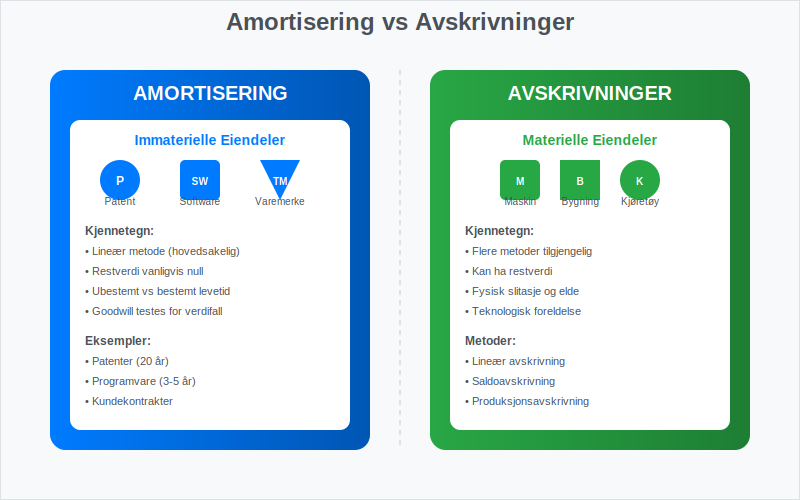
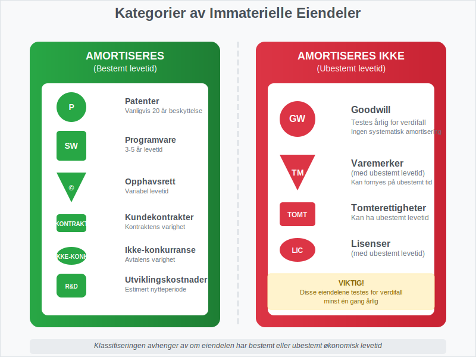
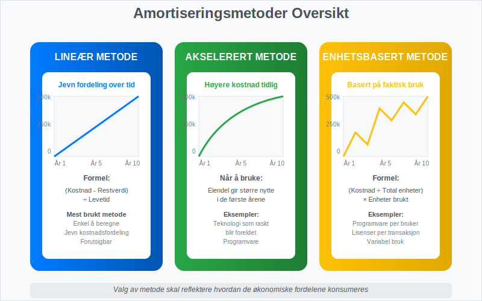
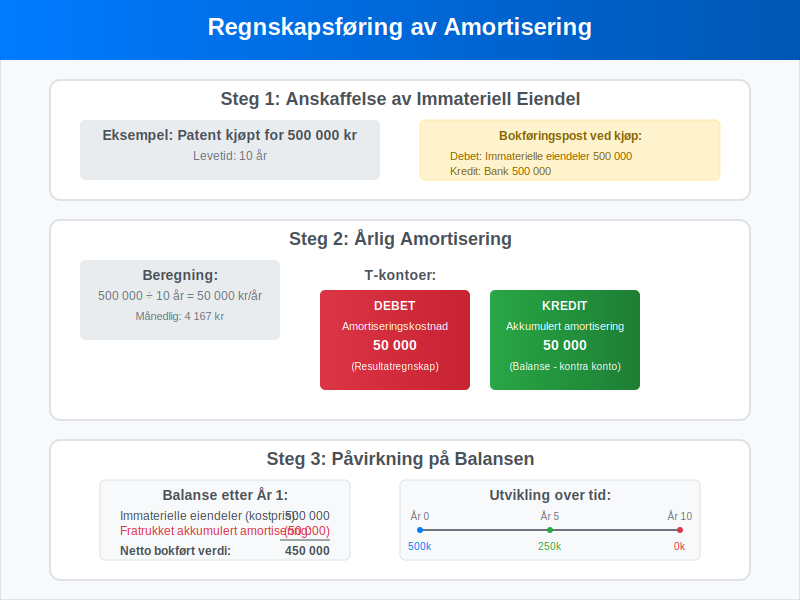
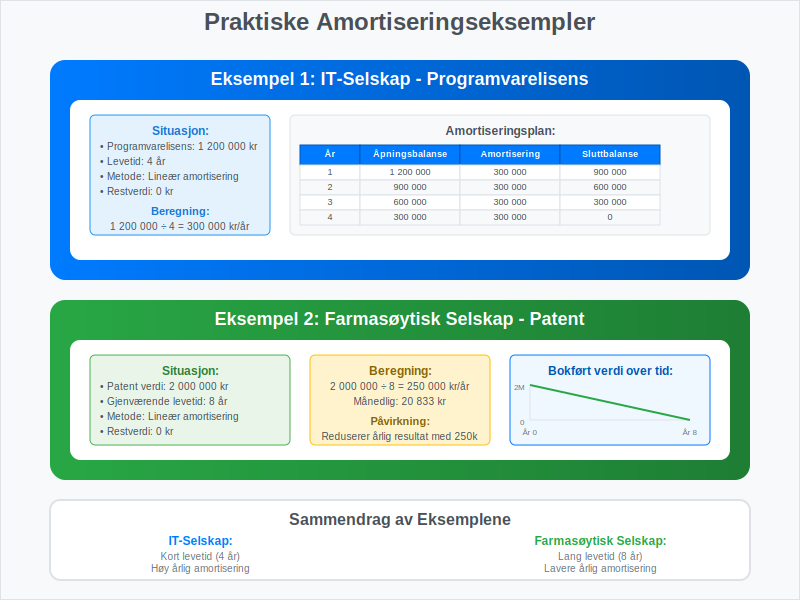
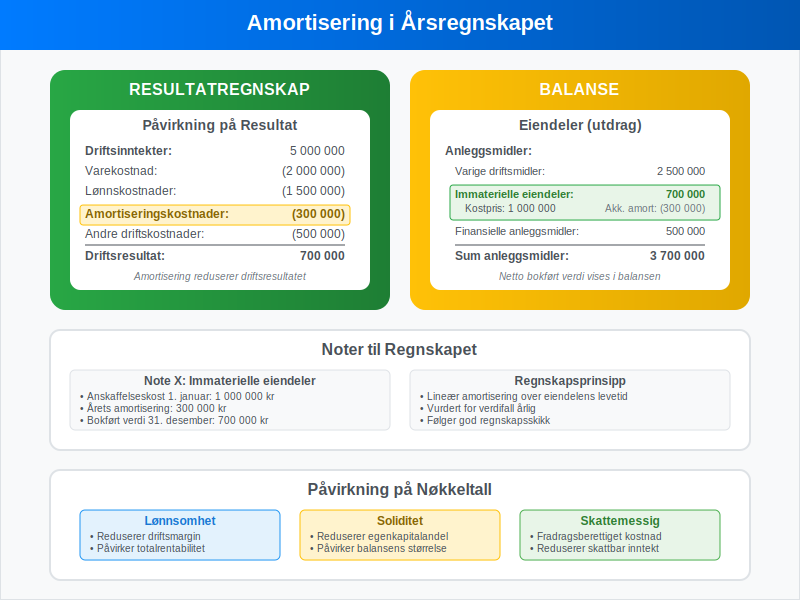
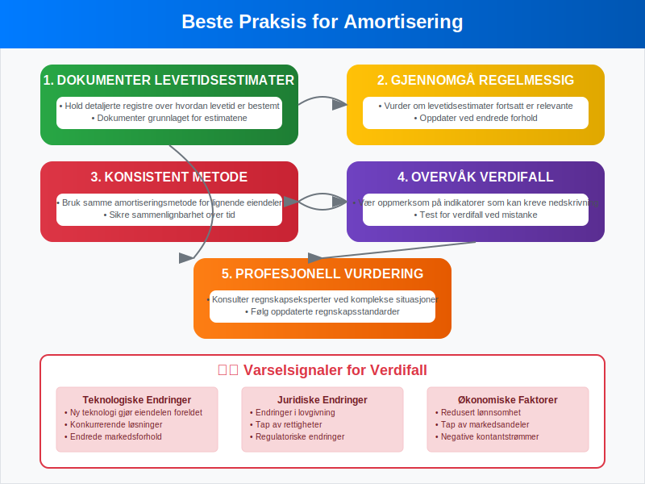

Amortisering er en regnskapsmessig metode for å fordele kostnaden av imaterielle rettigheter over deres økonomiske levetid. I motsetning til avskrivninger som gjelder materielle eiendeler, brukes amortisering spesifikt for å redusere verdien av immaterielle eiendeler som patenter, varemerker (se Hva er varemerke?), goodwill og programvare.
For mer om emisjonsrabatt ved lån og obligasjoner, se Hva er Disagio?.
Forskjellen mellom Amortisering og Avskrivninger
Mange forveksler amortisering med avskrivninger, men det er viktige forskjeller mellom disse to regnskapsbegrepene.

Hovedforskjeller:
| Aspekt | Amortisering | Avskrivninger |
|---|---|---|
| Eiendelstype | Immaterielle eiendeler | Materielle eiendeler (anleggsmidler) |
| Eksempler | Patenter, goodwill, programvare | Maskiner, bygninger, biler |
| Metoder | Lineær metode (hovedsakelig) | Lineær, saldometode, produksjonsmetode |
| Restverdi | Vanligvis null | Kan ha restverdi |
| Regnskapsstandard | NGRS/IFRS | NGRS/IFRS |
Typer Immaterielle Eiendeler som Amortiseres
Ikke alle imaterielle rettigheter amortiseres. Noen har ubestemt levetid og testes i stedet for verdifall.

Eiendeler som Amortiseres:
- Patenter: Beskytter oppfinnelser i en bestemt periode (vanligvis 20 år)
- Opphavsrettigheter: Gir eksklusiv rett til å bruke kreativt arbeid
- Programvare: Kjøpt eller utviklet programvare for intern bruk
- Kundekontrakter: Verdien av eksisterende kundeforhold
- Ikke-konkurranse avtaler: Avtaler som begrenser konkurranse
Eiendeler som IKKE Amortiseres:
- Goodwill: Testes årlig for verdifall
- Varemerker med ubestemt levetid: Testes for verdifall
- Tomterettigheter: Kan ha ubestemt levetid
Amortiseringsmetoder
Den mest brukte metoden for amortisering er den lineære metoden, men det finnes flere tilnærminger avhengig av eiendelens natur.

1. Lineær Amortisering
Dette er den vanligste metoden hvor kostnaden fordeles jevnt over eiendelens levetid.
Formel: Årlig amortisering = (Anskaffelseskost - Restverdi) ÷ Levetid i år
Eksempel:
- Patent anskaffet for 500 000 kr
- Levetid: 10 år
- Restverdi: 0 kr
- Årlig amortisering: 500 000 ÷ 10 = 50 000 kr
2. Akselerert Amortisering
Brukes når eiendelen gir større nytte i de første årene.
3. Enhetsbasert Amortisering
Basert på faktisk bruk eller produksjon, ofte brukt for programvare basert på antall brukere.
Regnskapsføring av Amortisering
Amortisering regnskapsføres på samme måte som avskrivninger, men påvirker immaterielle eiendeler i balansen.

Bokføringseksempel:
Ved anskaffelse av patent (500 000 kr):
Debet: Immaterielle eiendeler 500 000
Kredit: Bank 500 000
Ved årlig amortisering (50 000 kr):
Debet: Amortiseringskostnad 50 000
Kredit: Akkumulert amortisering 50 000
Praktiske Eksempler fra Norsk Næringsliv
La oss se på hvordan amortisering fungerer i praksis gjennom konkrete eksempler.

Eksempel 1: IT-Selskap
Situasjon: Et IT-selskap kjøper en programvarelisens for 1 200 000 kr med 4 års levetid.
Beregning:
- Årlig amortisering: 1 200 000 ÷ 4 = 300 000 kr
- Månedlig amortisering: 300 000 ÷ 12 = 25 000 kr
Amortiseringsplan:
| År | Åpningsbalanse | Amortisering | Sluttbalanse |
|---|---|---|---|
| 1 | 1 200 000 | 300 000 | 900 000 |
| 2 | 900 000 | 300 000 | 600 000 |
| 3 | 600 000 | 300 000 | 300 000 |
| 4 | 300 000 | 300 000 | 0 |
Eksempel 2: Farmasøytisk Selskap
Situasjon: Et farmasøytisk selskap har et patent verdt 2 000 000 kr med 8 års gjenværende levetid.
Beregning:
- Årlig amortisering: 2 000 000 ÷ 8 = 250 000 kr
Amortisering og Skattemessige Forhold
I Norge følger skattemessig behandling av amortisering spesifikke regler som kan avvike fra regnskapsmessig behandling. Disse forskjellene kan skape utsatt skattfordel eller -plikt.
Skattemessige Regler:
- Goodwill: Kan avskrives over 5 år skattemessig
- Patenter: Følger den faktiske levetiden
- Programvare: Vanligvis 3-5 år avskrivningstid
- Forskning og utvikling: Spesielle regler for FoU-kostnader
For mer informasjon om skattemessige avskrivninger, se vår guide om aksjekapital som også dekker egenkapitalrelaterte emner.
Amortisering i Årsregnskapet
Se også vår artikkel om årsregnskap for en fullstendig oversikt over prinsipper og komponenter.
Amortisering påvirker både resultatregnskapet og balansen, og må presenteres korrekt i årsregnskapet.

Presentasjon i Resultatregnskapet:
- Amortiseringskostnader føres som driftskostnader
- Kan spesifiseres separat eller inkluderes i “Avskrivninger”
- Påvirker driftsresultatet negativt
Presentasjon i Balansen:
- Immaterielle eiendeler vises til anskaffelseskost
- Akkumulert amortisering trekkes fra (som en negativ post)
- Netto bokført verdi vises i balansen
Verdifall og Nedskrivninger
Selv om eiendeler amortiseres planmessig, kan det oppstå situasjoner hvor verdien faller raskere enn forventet. I slike tilfeller kan nedskrivning være nødvendig.
Indikatorer på Verdifall:
- Teknologiske endringer som gjør eiendelen foreldet
- Endringer i markedsforhold
- Juridiske endringer som påvirker eiendelens verdi
- Konkurranse som reduserer eiendelens nytte
Nedskrivningstest:
Hvis det er indikasjoner på verdifall, må selskapet:
- Beregne gjenvinnbart beløp: Det høyeste av virkelig verdi minus salgskostnader og bruksverdi
- Sammenligne med bokført verdi: Hvis bokført verdi er høyere, skal det nedskrives
- Regnskapsføre nedskrivning: Som en ekstraordinær kostnad
Internasjonale Regnskapsstandarder
For selskaper som følger IFRS, gjelder spesifikke regler for amortisering av immaterielle eiendeler.
IAS 38 - Immaterielle Eiendeler:
- Innregningskriterier: Eiendelen må være kontrollerbar og gi fremtidige økonomiske fordeler
- Måling: Til anskaffelseskost minus akkumulert amortisering og verdifall
- Amortiseringsperiode: Over eiendelens brukstid, maksimalt 20 år hvis ikke bestemmelig
- Metode: Skal reflektere hvordan økonomiske fordeler konsumeres
Digitalisering og Moderne Amortisering
Med økt digitalisering endres også naturen av immaterielle eiendeler som må amortiseres.
Nye Typer Immaterielle Eiendeler:
- Cloud-baserte programvareløsninger: SaaS-abonnementer og lisenser
- Digitale plattformer: Utviklingskostnader for apps og nettsteder
- Data og algoritmer: Verdifulle datasett og AI-modeller
- Digitale kundeforhold: CRM-systemer og kundedata
Utfordringer ved Moderne Amortisering:
- Kortere levetid: Teknologi blir raskt foreldet
- Usikker verdi: Vanskelig å estimere fremtidig nytte
- Kompleks måling: Utfordringer med å skille utviklingskostnader fra drift
Beste Praksis for Amortisering
For å sikre korrekt amortisering bør selskaper følge etablerte beste praksis.

Anbefalinger:
- Dokumenter levetidsestimater: Hold detaljerte registre over hvordan levetid er bestemt
- Gjennomgå regelmessig: Vurder om levetidsestimater fortsatt er relevante
- Konsistent metode: Bruk samme amortiseringsmetode for lignende eiendeler
- Overvåk verdifall: Vær oppmerksom på indikatorer som kan kreve nedskrivning
- Profesjonell vurdering: Konsulter regnskapseksperter ved komplekse situasjoner
Sammenheng med Andre Regnskapsbegreper
Amortisering henger sammen med flere andre viktige regnskapsbegreper som er essensielle for å forstå det totale bildet.
Relaterte Begreper:
- Avskrivninger: For materielle eiendeler
- Nedskrivning: Når eiendelers verdi faller under bokført verdi
- Goodwill: Spesiell type immateriell eiendel som ikke amortiseres
- Aktivering: Når kostnader føres som eiendel i stedet for kostnad
For bedrifter som arbeider med aksjeselskap er det viktig å forstå hvordan amortisering påvirker selskapets finansielle stilling og rapportering til aksjonærer.
Konklusjon
Amortisering er et fundamentalt regnskapsprinsipp som sikrer at kostnaden av immaterielle eiendeler fordeles rettferdig over deres økonomiske levetid. Ved å forstå de ulike metodene, regnskapsføringen og praktiske anvendelsene, kan bedrifter sikre korrekt finansiell rapportering og ta bedre beslutninger om investeringer i immaterielle eiendeler.
Korrekt amortisering er ikke bare et regnskapskrav, men også et verktøy for å forstå den virkelige kostnaden ved å eie og bruke immaterielle eiendeler i virksomheten.